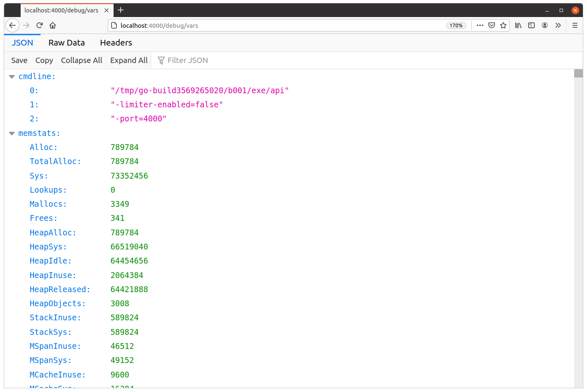

نمایش معیارها با expvar
مشاهده معیارهای برنامه ما به لطف این واقعیت آسان است که پکیج expvar یک تابع expvar.Handler() ارائه میدهد که یک handler HTTP برای نمایش معیارهای برنامه شما برمیگرداند.
به طور پیشفرض این handler اطلاعاتی درباره مصرف حافظه و همچنین یادآوری پرچمهای خط فرمانی که هنگام شروع برنامه استفاده کردید را نمایش میدهد، که همه در قالب JSON خروجی داده میشوند.
پس اولین کاری که میخواهیم انجام دهیم این است که این handler را در یک endpoint جدید GET /debug/vars نصب کنیم، به این صورت:
| متد | الگوی URL | Handler | عملیات |
|---|---|---|---|
| … | … | … | … |
| GET | /debug/vars | expvar.Handler() | نمایش معیارهای برنامه |
package main import ( "expvar" // New import "net/http" "github.com/julienschmidt/httprouter" ) func (app *application) routes() http.Handler { router := httprouter.New() router.NotFound = http.HandlerFunc(app.notFoundResponse) router.MethodNotAllowed = http.HandlerFunc(app.methodNotAllowedResponse) router.HandlerFunc(http.MethodGet, "/v1/healthcheck", app.healthcheckHandler) router.HandlerFunc(http.MethodGet, "/v1/movies", app.requirePermission("movies:read", app.listMoviesHandler)) router.HandlerFunc(http.MethodPost, "/v1/movies", app.requirePermission("movies:write", app.createMovieHandler)) router.HandlerFunc(http.MethodGet, "/v1/movies/:id", app.requirePermission("movies:read", app.showMovieHandler)) router.HandlerFunc(http.MethodPatch, "/v1/movies/:id", app.requirePermission("movies:write", app.updateMovieHandler)) router.HandlerFunc(http.MethodDelete, "/v1/movies/:id", app.requirePermission("movies:write", app.deleteMovieHandler)) router.HandlerFunc(http.MethodPost, "/v1/users", app.registerUserHandler) router.HandlerFunc(http.MethodPut, "/v1/users/activated", app.activateUserHandler) router.HandlerFunc(http.MethodPost, "/v1/tokens/authentication", app.createAuthenticationTokenHandler) // Register a new GET /debug/vars endpoint pointing to the expvar handler. router.Handler(http.MethodGet, "/debug/vars", expvar.Handler()) return app.recoverPanic(app.enableCORS(app.rateLimit(app.authenticate(router)))) }
خوب، بیایید آن را امتحان کنیم.
API را مجدداً راهاندازی کنید و چند پرچم خط فرمان برای نشان دادن آن پاس دهید. به این صورت:
$ go run ./cmd/api -limiter-enabled=false -port=4000 time=2023-09-10T10:59:13.722+02:00 level=INFO msg="database connection pool established" time=2023-09-10T10:59:13.722+02:00 level=INFO msg="starting server" addr=:4000 env=development
و اگر در مرورگر خود به http://localhost:4000/debug/vars مراجعه کنید، باید یک پاسخ JSON حاوی اطلاعاتی درباره برنامه در حال اجرای خود ببینید.
در مورد من، پاسخ به این صورت است:

میتوانیم ببینیم که JSON اینجا در حال حاضر حاوی دو آیتم سطح بالا است: "cmdline" و "memstats". بیایید سریعاً بررسی کنیم که اینها چه چیزی را نشان میدهند.
آیتم "cmdline" حاوی آرایهای از آرگومانهای خط فرمان استفاده شده برای اجرای برنامه است، که با نام برنامه شروع میشود. این در واقع یک نمایش JSON از متغیر os.Args است و اگر بخواهید دقیقاً ببینید چه تنظیمات غیرپیشفرضی هنگام شروع برنامه استفاده شده، مفید است.
آیتم "memstats" حاوی یک اسکن «لحظهای» از مصرف حافظه است، همانطور که توسط تابع runtime.MemStats() برگردانده میشود. مستندات و توضیحات برای تمام مقادیر اینجا قابل مشاهده است، اما مهمترینها عبارتند از:
TotalAlloc— بایتهای تجمعی اختصاص یافته در heap (کاهش نخواهد یافت).HeapAlloc— تعداد فعلی بایتها در heap.HeapObjects— تعداد فعلی اشیاء در heap.Sys— کل بایتهای حافظه به دست آمده از سیستمعامل (یعنی کل حافظه رزرو شده توسط Go runtime برای heap، stacks و سایر ساختارهای داده داخلی).NumGC— تعداد چرخههای کامل شده garbage collector.NextGC— اندازه هدف heap برای چرخه بعدی garbage collector (Go تلاش میکندHeapAlloc≤NextGCرا حفظ کند).